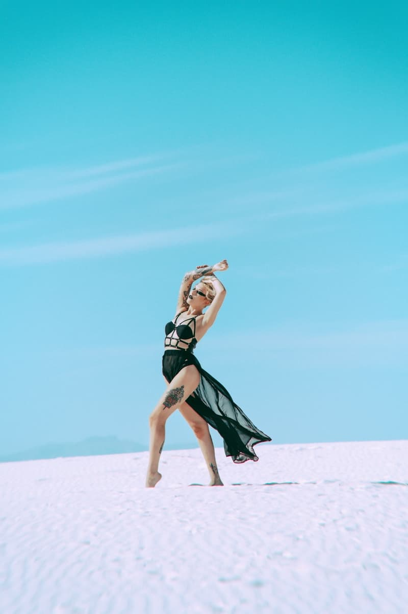
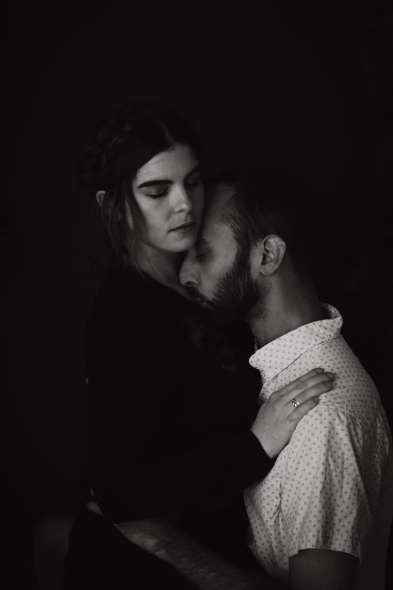
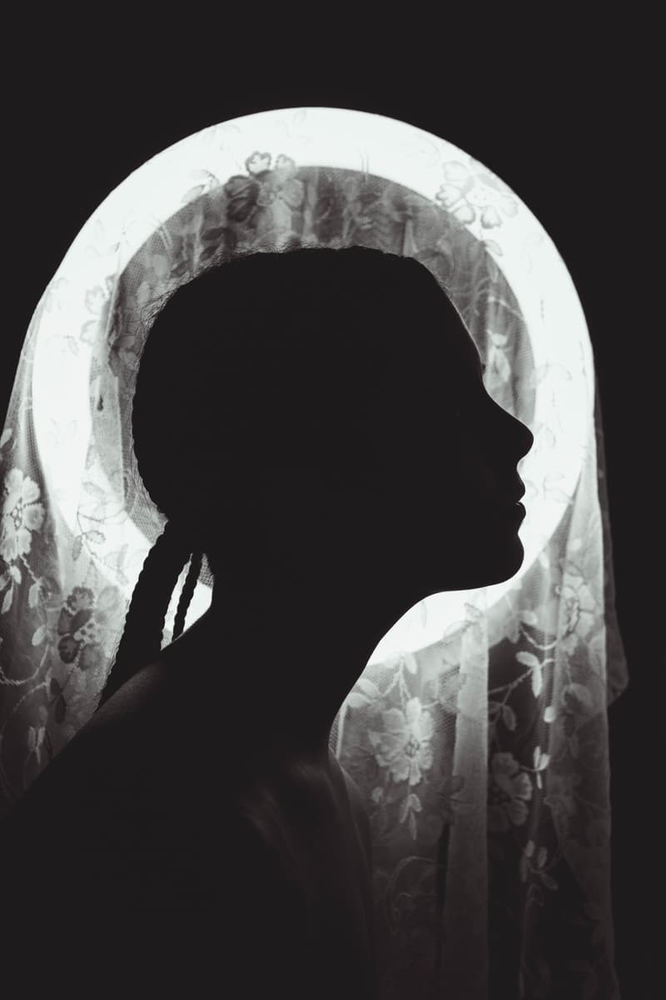

Environmental Portraiture
Capturing the raw, unpolished resilience of the human form in the vastness of the Southwest.
View SeriesFine art portraiture and sensory storytelling from the heart of the Borderplex.

Capturing the raw, unpolished resilience of the human form in the vastness of the Southwest.
View Series
Exploring the sensory depth of human connection and the vulnerability of being seen.
View Series
Conceptual explorations of light, silhouette, and the "Art of Becoming."
View Series[ Reserved for Architectural Narratives: The Overland Project ]
Documenting the historic restoration and soul of the Lenox Building.